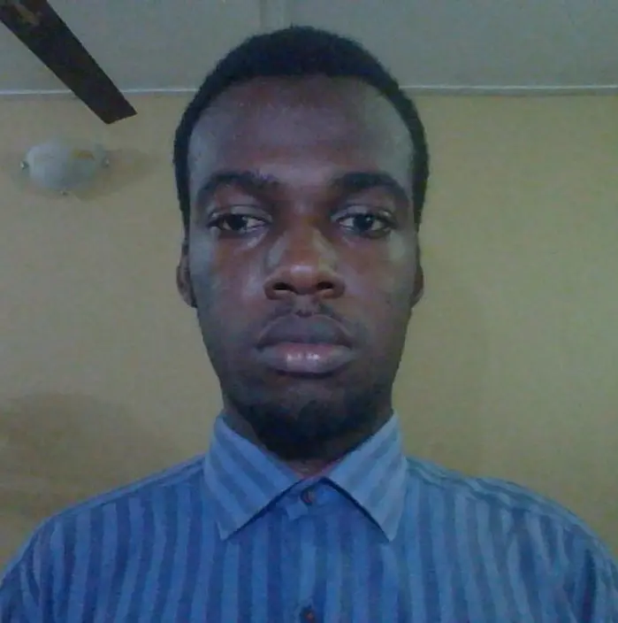
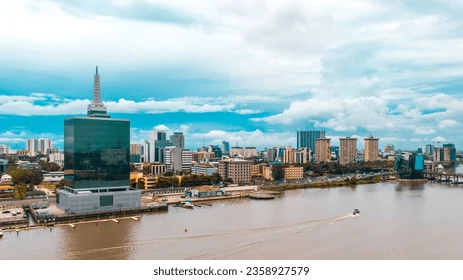

About Me
My name is Bliss Victor-Nwozuzu, and I am currently a student at Brigham Young University pursuing a degree in Software Development. I have a strong interest in learning new programming languages and expanding my technical skill set. I am proficient in English and my native language Igbo
Lagos, Nigeria

I was born and raised in Lagos, Nigeria. Lagos is a bustling city known for its vibrant culture, diverse population, and economic significance in Africa. It is the largest city in Nigeria and serves as a major financial center in the continent.